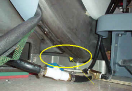

Illustration 6: Place Dock Down To The Left Of The Stud In The Floor

Illustration 6: Place Dock Down To The Left Of The Stud In The Floor
| NOTE: | It should not be extremely difficult for two FEs to pull the dock away from the magnet once all bolts are removed. If you do encounter difficulty, check that the brackets are not caught against the front of the magnet. See Illustration 7. |
Illustration 7: Watch For Interference Between The Bracket And The Magnet
